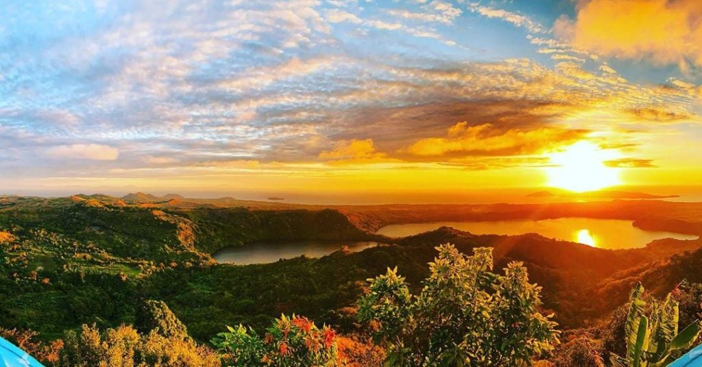
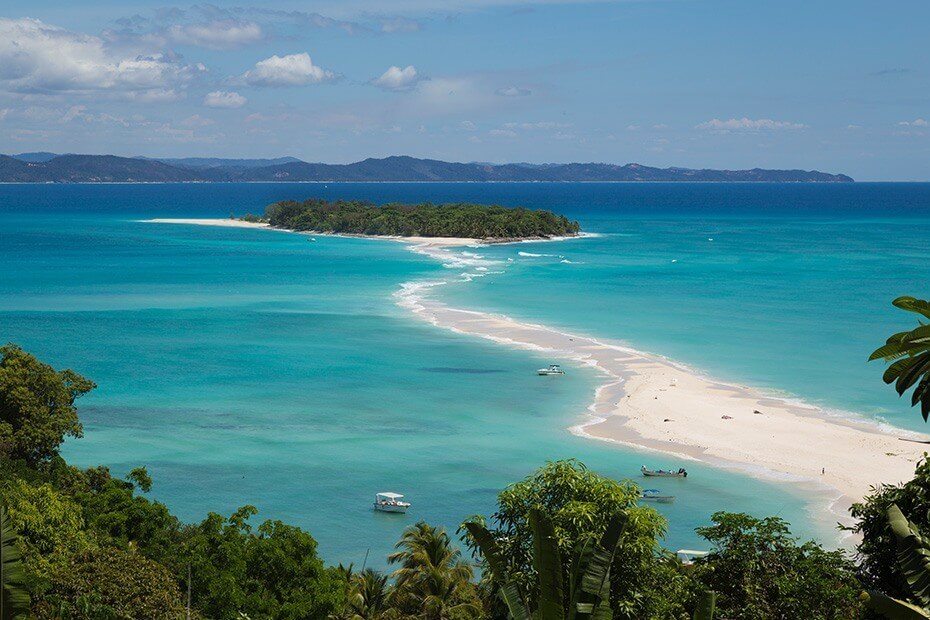

Antananarivo

Mont Passot (Coucher de soleil)

Nosy Iranja
Ampefy

Baie de Diego Suarez

Montagne des Français
Antsirabe

Plage de Sainte Marie

Observation des baleines
Fianarantsoa
Plage de Sainte Marie
Observation des baleines